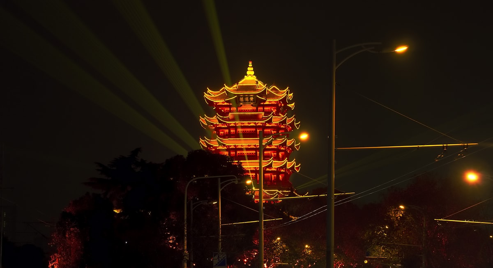
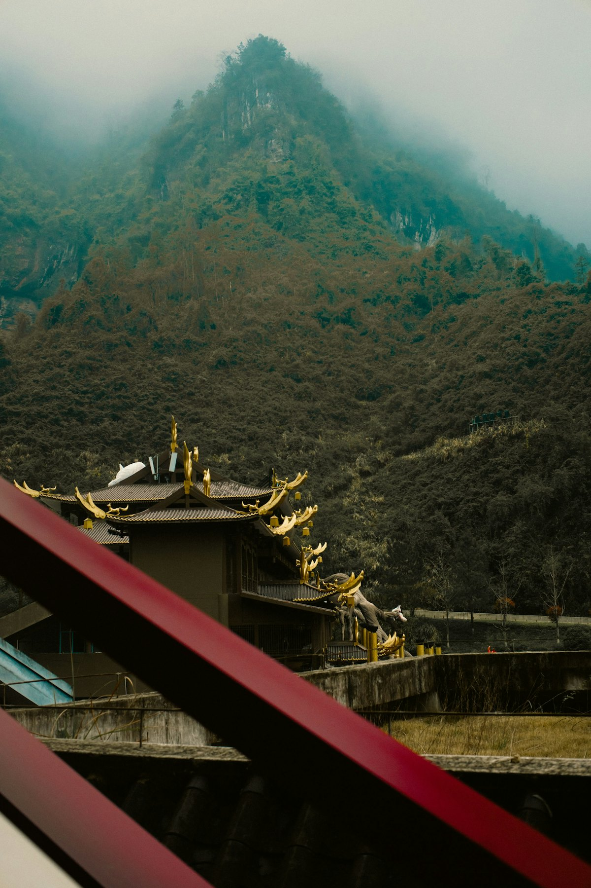
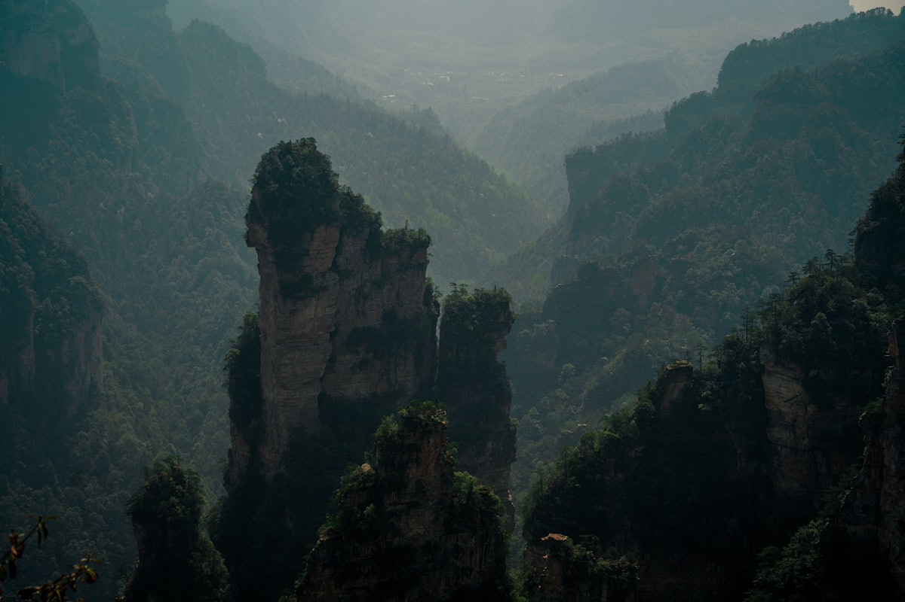
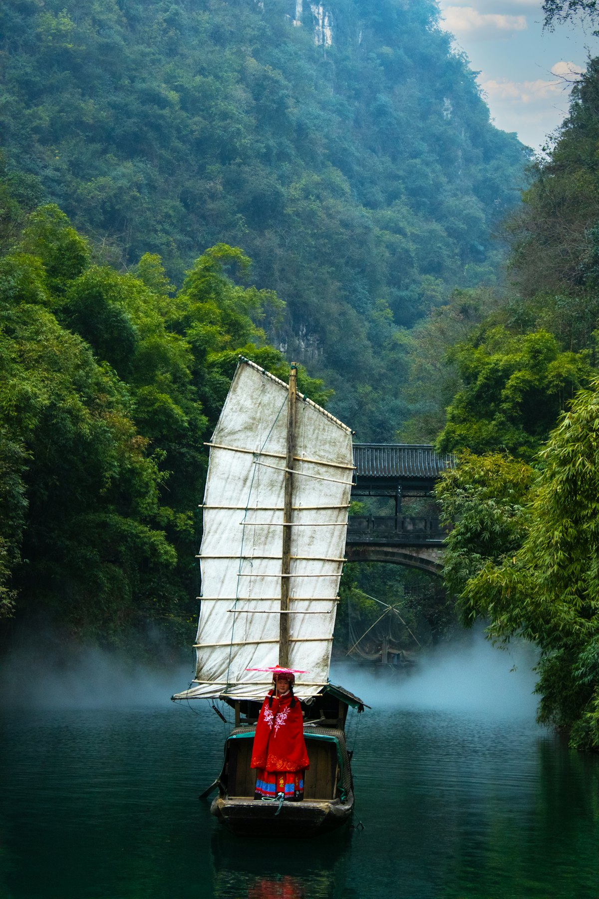
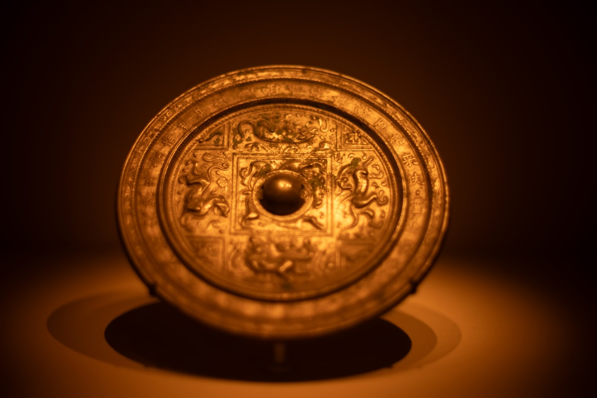
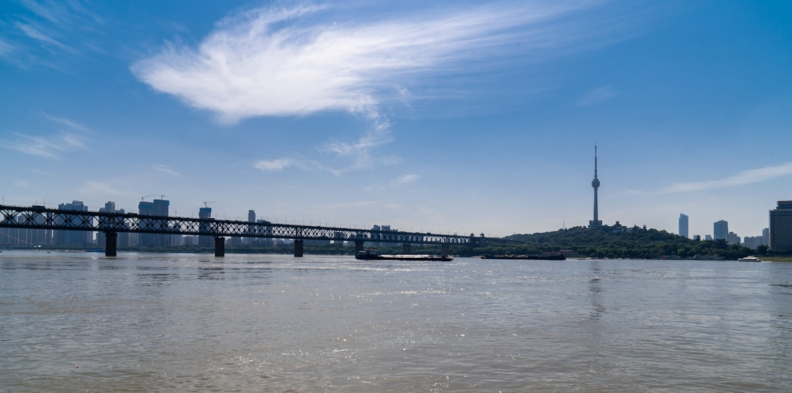

| 事项 | 结论 |
|---|---|
| 事项 | 结论 |
| 推荐方案 | 10 天 9 晚（武汉 2 晚 + 鄂西纵贯线） |
| 返程约束 | 第 10 天下午/晚间返程 |
| 行程链 | 武汉 → 宜昌三峡 → 武当山 → 神农架 → 恩施大峡谷 |
| 预算（人均） | 经济 3800–4800 ／ 标准 5800–7500 ／ 舒适 9500–12000 |
| 三件提前事 | ① 武当山/恩施门票提前 1–3 天订 ② 神农架住宿旺季提前 2 周 ③ 三峡船票与省博预约 |
| 季节提醒 | 春秋最舒适；夏季恩施/神农架凉爽避暑，冬季武当有雪景 |
| 交通卡 | 武汉到宜昌高铁 2h，鄂西段以大巴/包车为主 |
以下为 10 天 9 晚的推荐节奏。湖北东西跨度大，前半段城市人文、后半段山水秘境，节奏由快转慢。
| 日期 | 行程 | 过夜地 | 主题 |
|---|---|---|---|
| D1 抵汉 | 高铁到武汉，江汉路步行街 + 汉口江滩夜景 | 武汉 | 抵达 + 预热 |
| D2 | 黄鹤楼 + 湖北省博物馆 + 东湖（傍晚） | 武汉 | 荆楚人文 |
| D3 | 武汉 → 宜昌，三峡大坝 + 坛子岭远眺 | 宜昌 | 大国重器 |
| D4 | 宜昌 → 武当山，下午太子坡/紫霄宫 | 武当山 | 仙山初探 |
| D5 | 武当山金顶（索道上下）+ 南岩宫 | 武当山 | 武当问道 |
| D6 | 武当山 → 神农架木鱼镇，下午官门山/天生桥 | 神农架 | 原始秘境 |
| D7 | 神农顶 + 大九湖（全天） | 神农架 | 华中屋脊 |
| D8 | 神农架 → 恩施，傍晚土司城/女儿城 | 恩施 | 土家风情 |
| D9 | 恩施大峡谷（云龙地缝 + 七星寨）全天 | 恩施 | 峡谷奇观 |
| D10 返程 | 上午自由活动/采购特产，下午高铁返程 | — | 收尾 |
以下为 10 天全程的逐小时执行时间线，可当作「当天打开照着走」的清单。标注 ※ 的可选项视体力与天气取舍。
| 时间 | 事项 |
|---|---|
| 14:00–17:00 | 抵达武汉（高铁到武汉站/汉口站，飞机到天河机场），地铁进城入住江汉路/户部巷周边 |
| 17:30–18:30 | 办理入住，熟悉地铁 |
| 19:00–21:00 | 江汉路步行街 + 汉口江滩夜景（免费）：老洋房建筑、江滩看长江灯光秀 |
| 21:00 | 回酒店休息 |
| 时间 | 事项 |
|---|---|
| 08:30–11:00 | 黄鹤楼（门票参考 70 元）：登楼望长江、看楚天第一楼，拍红墙机位在楼前 |
| 11:00–12:30 | 午餐：户部巷小吃（热干面、三鲜豆皮） |
| 13:00–16:00 | 湖北省博物馆（免费需预约）：曾侯乙编钟、越王勾践剑，镇馆之宝必看 |
| 16:30–18:00 | 东湖（免费）：磨山/听涛景区骑行或湖边散步 |
| 18:30 | 晚餐：武昌江滩/楚河汉街 |
| 时间 | 事项 |
|---|---|
| 08:00 | 高铁武汉 → 宜昌东（约 2 小时），抵达后换乘景区巴士 |
| 11:00–15:00 | 三峡大坝（景区免费，观光车参考 35 元）：坛子岭俯瞰大坝全景、185 平台、截流纪念园 |
| 15:30–17:00 | 可选择：乘长江游船过船闸体验（参考 180 元） |
| 17:30 | 入住宜昌市区（万达/CBD 商圈），晚餐三峡特色（肥鱼） |
| 时间 | 事项 |
|---|---|
| 08:00 | 宜昌 → 武当山（动车约 2.5h 到十堰东，再转景区直通大巴） |
| 11:30–13:00 | 武当山镇午餐，办理住宿（山脚/景区内） |
| 13:30–16:30 | 太子坡（九曲黄河墙）+ 紫霄宫（门票含在武当山大门票内）：明清道教古建筑群 |
| 17:30 | 返回住宿，晚餐（武当山道茶、山野菜） |
| 时间 | 事项 |
|---|---|
| 07:30 | 景区开门即进，坐景交到琼台乘索道上金顶（索道往返参考 170 元） |
| 09:00–12:00 | 金顶：太和宫、金殿，登顶俯瞰七十二峰朝大顶 |
| 12:00–13:00 | 金顶附近简餐 |
| 13:30–16:30 | 南岩宫：悬崖宫观、龙头香，观景平台看仙山云海 |
| 17:30 | 下山返回住宿，泡个脚休息 |
| 时间 | 事项 |
|---|---|
| 08:00 | 武当山 → 神农架木鱼镇（包车/大巴约 4h，山路多弯） |
| 12:30–13:30 | 木鱼镇午餐（神农腊肉、土豆） |
| 14:00–17:00 | 官门山或天生桥（联票含）：原始森林、瀑布溪流、熊猫馆（官门山） |
| 18:00 | 入住木鱼镇，晚餐+早睡 |
| 时间 | 事项 |
|---|---|
| 07:00 | 木鱼镇出发前往神农顶（联票参考 130 元，含景交） |
| 08:30–12:00 | 神农顶：华中屋脊 3106 米，板壁岩、瞭望塔、高山草甸 |
| 12:00–13:00 | 景区内简餐 |
| 13:30–17:00 | 大九湖：高山湿地、晨雾草甸，乘小火车逐湖游览 |
| 18:30 | 返回木鱼镇住宿 |
| 时间 | 事项 |
|---|---|
| 08:00 | 神农架 → 恩施（大巴/包车约 6–7h，或神农架→宜昌→恩施中转） |
| 15:00–16:00 | 抵达恩施入住（土桥坝/火车站商圈） |
| 16:30–18:00 | 恩施土司城（门票参考 50 元）：土家族土司制度建筑，九进堂 |
| 18:30–21:00 | 女儿城（免费）：土家歌舞表演、摔碗酒、夜市 |
| 时间 | 事项 |
|---|---|
| 08:00 | 出发恩施大峡谷（市区约 1h 车程，联票参考 170 元） |
| 09:30–14:00 | 云龙地缝（地下暗河瀑布）+ 七星寨（一线天、绝壁栈道、一炷香） |
| 14:00 | 景区内简餐（自理或自带） |
| 15:00–17:00 | 乘景交返回入口，休整 |
| 18:00 | 回恩施市区，晚餐（恩施豆皮、合渣） |
| 时间 | 事项 |
|---|---|
| 08:30–10:00 | 自由活动：恩施土司城补逛或市区采购 |
| 10:00–11:30 | 采购特产：恩施玉露茶、土家腊肉、莼菜 |
| 11:30–12:30 | 午餐 |
| 13:00–16:00 | 退房，恩施站高铁返程（或恩施→武汉→全国） |
必去（必去）/ 顺路（顺路）/ 可跳过（可跳过）。

必去
必去
必去
顺路
可跳过图片为 Unsplash 主题图（黄鹤楼、长江、武当仙山、峡谷瀑布为湖北/同主题实景或示意图），用于页面配图。更多免费景点：汉口江滩、东湖绿道、恩施女儿城、户部巷。
点击左侧节点可在地图上定位；点击地图 marker 会高亮对应节点。坐标为 WGS-84 转 GCJ-02 纠偏后标注。
以下为单人、不含购物的估算；门票为旺季参考价，以现场为准。交通按高铁往返计（从华北/华东周边城市出发约 900–1500 元），不同出发地浮动较大。鄂西转场交通是大头。
| 项目 | 经济（3800–4800） | 标准（5800–7500） | 舒适（9500–12000） |
|---|---|---|---|
| 往返交通 | 高铁约 900–1400 | 高铁/飞机约 1600–2600 | 飞机+接送约 3000–4000 |
| 住宿（9 晚） | 青旅/快捷 900–1400 | 连锁酒店 2000–3000 | 江景/山景酒店 5000–6500 |
| 门票 | 基础景点约 500 | 含索道景交约 800 | 全含 + 游船约 1200 |
| 餐饮（10 天） | 600–800 | 1200–1600（含三峡肥鱼） | 2000–2600（老字号） |
| 省内交通 | 高铁+大巴 400–500 | 高铁+包车 600–900 | 包车 900–1300 |
冬季武当山雪后银装、游客稀少，但索道可能因雪停运，需走登山步道；神农架滑雪场开放。保暖装备与防滑鞋必备，行程节奏放慢。
带娃推荐：省博编钟表演、东湖绿道骑行、三峡大坝（震撼直观）；恩施大峡谷与武当金顶台阶多，改为半天体验；神农架天生桥瀑布孩子喜欢。
| 方式 | 时长 | 参考价 | 备注 |
|---|---|---|---|
| 高铁（推荐） | 视出发地 2–7h | 二等座 200–900 元 | 武汉为华中枢纽，到宜昌/十堰 2–4h |
| 飞机 | 视出发地 1–3h | 300–1800 元 | 天河机场地铁进城；宜昌/恩施有机场 |
| 自驾 | 视出发地 | 高速+停车费 | 鄂西山路多，新手慎行；三峡大坝需预约入园 |
| 区域 | 价格/晚 | 优点 | 短板 |
|---|---|---|---|
| 武汉江汉路/户部巷 | 快捷 250–400 / 星级 600–1200 | 近黄鹤楼、江滩、地铁便利 | 旺季游客多 |
| 宜昌万达/CBD | 快捷 200–350 | 近高铁站与长江，去三峡方便 | 景点距离市区 1h |
| 武当山脚镇 | 快捷 180–300 | 近景区大门，性价比高 | 旺季周末紧张 |
| 神农架木鱼镇 | 民宿 250–450 | 景区集散地，生态好 | 旺季贵、房少 |
| 恩施土桥坝 | 快捷 200–350 | 近火车站与大峡谷专线 | 市区无大江景 |